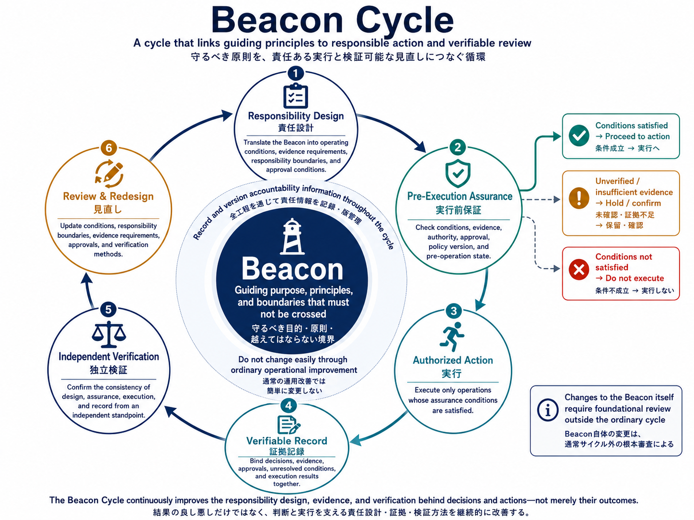

Beacon Cycle:
responsibility before action.
Beacon Cycle translates stable guiding principles into responsibility design, pre-execution assurance, authorized action, verifiable records, independent verification, and evidence-based redesign.
実行前に条件を確認し、実行後に証拠と責任を検証できる形で残すための運用モデルです。
Six steps around
a stable Beacon.
Translate the Beacon into conditions, evidence requirements, responsibility boundaries, approval rules, and exception handling.
Before state changes, check required evidence, authority, policy version, and expected scope of effect.
Execute only operations bound to a satisfied assurance result. If assurance is not satisfied, the state-changing operation does not proceed.
Bind decision, conditions, evidence, approvals, unresolved assumptions, pre-state, and result.
Confirm from outside the executor whether design, assurance, execution, and records stayed consistent.
Use verification results to revise conditions, boundaries, evidence requirements, approvals, and verification methods.
Design alone
does not authorize action.
The required assurance conditions must be satisfied at the time of execution. This is where the model differs from a purely after-the-fact review cycle.
Proceed: all required evidence, authority, and approvals are confirmed.
Hold: evidence is missing, ambiguous, stale, or outside the acceptable window.
Stop: required conditions are not met; the state-changing operation does not proceed.
Not a replacement
for PDCA.
PDCA asks how an organization improves its work. Beacon Cycle asks whether an important action was permitted under defined conditions and whether that decision remains independently verifiable.
| Aspect | PDCA | Beacon Cycle |
|---|---|---|
| Main concern | Performance and process improvement. | Justifiable, verifiable decisions and actions. |
| Sequence | Plan, Do, Check, Act. | Design, assure, authorize, record, verify, redesign. |
| Blocking mechanism | Usually improves after the fact. | Includes a pre-execution gate that can prevent action. |
One model,
three supporting layers.
Conceptual and formal foundation for binding decisions, responsibility, evidence, unverified conditions, and state transitions.
Interoperability layer for requirements, evidence, verification outcomes, adoption states, and authorized transitions.
Implements replayable records, independent recalculation, integrity verification, and post-execution comparison.
Use it where
conditions matter before action.
Illustrative domains include pharmaceutical logistics, critical configuration changes, and AI agent delegation. Beacon Cycle is not a certification scheme, legal guarantee, or automated ethics score.